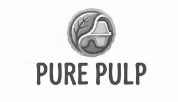

Trade Mark Journal No.2026/007 13 February 2026
UK00004330139 26 January 2026 (16,20,35)

- Class 16
- Cardboard packaging; Paper and cardboard; Labels of paper or cardboard; Paper envelopes for packaging; Packaging boxes of paper; Bottle wrappers of cardboard or paper; Bottle wrappers of paper or cardboard; Cartons of cardboard for packaging; Packaging cartons of cardboard; Boxes of cardboard or paper; Boxes of paper or cardboard; Packaging boxes of cardboard; Containers of paper for packaging; Packaging containers of paper; Bottle envelopes of paper or cardboard; Bottle envelopes of cardboard or paper; Paper bags for packaging; Packaging bags of paper; Bags and articles for packaging, wrapping and storage of paper, cardboard or plastics; Paper pouches for packaging; Airtight packaging of paper; Containers of cardboard for packaging; Stuffing of paper or cardboard; Absorbent sheets of paper or plastic for foodstuff packaging; Paperboard [cardboard]; Airtight packaging of cardboard; Signboards of paper or cardboard; Industrial paper and cardboard; Plastic sheets for packaging; Cardboard; Bags [envelopes, pouches] of paper or plastics, for packaging; Printed packaging materials of paper; Placards of paper or cardboard; Plastic sheets for wrapping and packaging; Cardboard hangtags; Padding materials of paper or cardboard; Packaging wrappers of plastic; Industrial packaging containers of paper; Corrugated cardboard; Bags made of paper for packaging; Cardboard cartons; Corrugated paper; Corrugated cardboard boxes; Linerboard for corrugated cardboard; Plastic foil for packaging; Cardboard labels; Bags for packaging made of biodegradable paper; Packaging materials made of cardboard; Packing [cushioning, stuffing] materials of paper or cardboard; Advertising signs of paper or cardboard; Advertisement boards of paper or cardboard; Containers for ice made of paper or cardboard; Absorbent pads of paper and cellulose for use in food packaging; Humidity control sheets of paper or plastic for foodstuff packaging; Cardboard packaging boxes in collapsible form; Plastic bags for wrapping and packaging; Paper hangtags; Cardboard packaging boxes in made-up form; Paperboard boxes [for industrial packaging]; Paperboard boxes for industrial packaging; Paperboard trays for packaging food; Plastic bags for packaging; Plastic materials for packaging; Boxes of cardboard; Cardboard boxes; Foils of plastic for packaging; Packaging materials made of recycled paper; Cardboard containers; Paper containers; Containers of paper for packaging purposes; Packing cardboard; Cartons of card for packaging; Packaging cartons of card; Kraft paper; Plastic films for wrapping and packaging; Paper boxes; Boxes of paper; Plastic film for packaging; Plastic material for packaging; Paper carton sealing tape; Packaging materials of plastic for sandwiches; Glassine paper; Rolls of plastic film for packaging; Paper sheets [stationery]; Plastic coated copying paper; Plastic envelopes; Cardboard cake boxes; Packing cardboard containers; Packing containers of cardboard; Envelope paper; Giftwrapping paper; Adhesive plastic film for packaging; Bubble packs (Plastic -) for wrapping or packaging; Plastic bubble packs for wrapping or packaging; Carrier bags of paper or plastic; Printed cardboard invitations; Newsprint paper; Plastic bags for packaging ice; Food bags of paper or plastics; Paper stationery; Recycled paper; Labels of paper; Paper labels; Packaging boxes of card; Lining papers for packaging; Paper mail pouches; Printed paper labels; Cardboard gift boxes; Greaseproof paper; Cardboard pizza boxes; Brown paper for wrapping; Plastic film roll stock for packaging food; Plastic film roll stock for packaging pharmaceuticals; Plastic films for packaging; Plastic film roll stock for packaging; Rubbish bags (made of paper or plastic materials).
- Class 20
- Plastic trays [containers] used in food packaging; Packaging containers of plastic; Containers of plastic (Packaging -); Egg containers [packaging] of plastic; Plastic medication containers; Plastic trays for foodstuff packaging; Plastic stoppers for industrial packaging containers; Portable boxes [containers] of plastic; Packing containers of plastic material; Containers made of plastic for compost; Pots of plastic for packaging; Wooden lids for industrial packaging containers; Container closures of plastic; Thermoformed plastics containers [other than for household or kitchen use]; Receptacles of plastic for packaging; Stacking trays of plastic for the packaging of eggs; Plastic lids for cans; Plastic crates; Industrial packaging containers of bamboo; Decorations of plastic for foodstuffs; Foodstuffs (Decorations of plastic for -); Wooden stoppers for industrial packaging containers; Receptacles of plastic for storing goods for transportation; Plastics components for packaging containers; Egg cartons [packaging] of plastic; Plastics closures for containers; Flexible containers of plastics for the storage of liquids; Industrial packaging containers of wood; Compost bins of plastic; Transparent food containers for commercial packaging use; Packaging containers not of metal; Composting receptacles of plastic; Containers (Non-metallic -) adapted for packaging beer; Flexible containers of plastics for the transport of liquids; Plastic inserts for use as container liners; Plastic medication containers for commercial use; Portable water carriers [containers] made of plastics; Plastic tubs; Plastic boxes; Plastic storage tanks; Labels of plastic; Plastic storage drums; Plastic stoppers for bottles.
- Class 35
- Online marketing; Online advertising; Online advertisements; Advertising the goods and services of online vendors via a searchable online guide; Online ordering services; Online advertising services; On-line advertising; Providing a searchable online advertising guide featuring the goods and services of other on-line vendors on the internet; Providing a searchable online advertising guide featuring the goods and services of online vendors; Providing searchable online advertising guides; Online retail services in relation to downloadable virtual handbags; Online retail services for downloadable virtual clothing; Online retail services in relation to downloadable virtual footwear; Online advertising on computer networks; Online advertising on a computer network; Online retail services in relation to downloadable virtual headwear; Online retail services in relation to downloadable virtual clothing; Business information services provided online from a computer database or the internet; Online business networking services; On-line auctioneering services via the Internet; On-line auctioneering; Computerized on-line ordering services; Business information services provided on-line from a computer database or the internet; On-line advertising on a computer network; On-line advertising on computer networks; Online retail services relating to toys; Promotion, advertising and marketing of on-line websites; Arranging subscriptions of the online publications of others; Online retail services for downloadable digital music; Compilation of online business directories; Online retail services for downloadable and pre-recorded music and movies; Online retail services in relation to downloadable virtual works of art; Online retail services relating to handbags; On-line promotion of computer networks and websites; Online advertising via a computer communications network; Online retail services relating to jewelry; Online retail services for downloadable ring tones; Business information services provided online from a global computer network or the internet; Dissemination of advertising matter online; Online community management services; Online retail services relating to cosmetics; Providing an on-line commercial information directory on the internet; Online retail store services relating to clothing; Online retail services relating to clothing.
Razin Shaikh